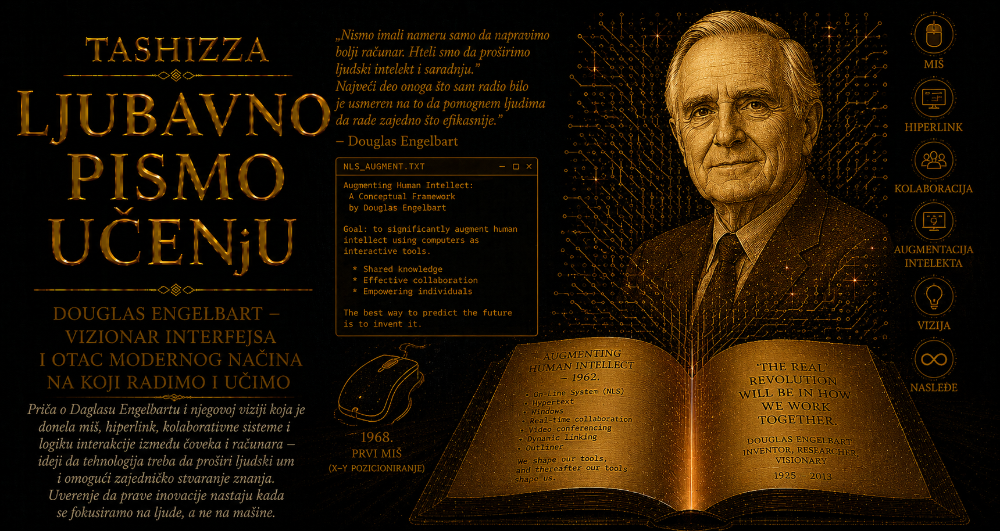

Ljubavno pismo učenju

Početkom šezdesetih godina dvadesetog veka računar je za većinu ljudi predstavljao udaljenu, skupu i strogo specijalizovanu mašinu, smeštenu u istraživačkim ustanovama, vojnim centrima, velikim kompanijama i univerzitetima. Korisnik najčešće nije sedeo pred ekranom niti je neposredno pratio kako njegove zamisli poprimaju digitalni oblik. Program i podaci pripremali su se na bušenim karticama ili trakama, predavali operaterima, a rezultat se čekao satima. Jedna greška mogla je zahtevati novi krug pripreme i obrade. Računarsko vreme smatralo se dragocenim, dok se čovekovo prilagođavanje mašini prihvatalo kao prirodan uslov rada.
Takvi računari mogli su da izračunavaju putanje projektila, obrađuju statističke podatke i rešavaju složene sisteme jednačina, ali još nisu postali prostor u kojem čovek piše, istražuje, povezuje ideje i sarađuje sa drugima. Njihova snaga merila se brzinom obrade, kapacitetom memorije i brojem izvršenih operacija. Douglas Engelbart pomerio je središte pažnje sa same mašine na ljudsku sposobnost mišljenja. Pitao se kako računar može pomoći ljudima da jasnije razumeju složene pojave, bolje organizuju znanje i zajednički rešavaju probleme koji prevazilaze mogućnosti pojedinca.
Iz tog pitanja razvila se njegova zamisao o proširivanju ljudskog intelekta. Engelbart je govorio o povećanju čovekove sposobnosti da sagleda složenu situaciju, prepozna važne odnose, postavi precizna pitanja, razvije moguća rešenja i prenese ih drugima. Računar je pripadao širem sistemu koji su činili ljudi, jezik, simboli, metode rada, organizacione navike, obuka i tehnička sredstva. Novi uređaj mogao je ostati gotovo beskoristan ukoliko se nisu razvijale veštine njegovih korisnika, kao što ni dobra metoda rada nije mogla ostvariti puni domet bez odgovarajućeg tehnološkog okruženja.
Engelbart je ovu viziju sistematski izložio 1962. godine u istraživačkom izveštaju Augmenting Human Intellect: A Conceptual Framework. Ljudsku sposobnost rešavanja problema posmatrao je kao organizovanu celinu koju je moguće proučavati, razvijati i usavršavati. Posebno ga je zanimala mogućnost da čovek uz pomoć računara brzo menja prikaz informacija, prelazi između različitih nivoa pojedinosti, povezuje udaljene delove dokumenta i čuva trag nastanka neke ideje. Pisanje je moglo prerasti pravolinijsko nizanje rečenica na papiru i postati rad sa promenljivom strukturom čiji se delovi pomeraju, sažimaju, proširuju i povezuju prema potrebama istraživača.
U središtu njegove vizije nalazio se čovek pred ekranom, u neposrednom odnosu sa računarom. Korisnik bi uneo naredbu, odmah video njenu posledicu i prilagodio sledeći korak onome što je upravo saznao. Taj kratki krug između namere, akcije i povratne informacije menjao je prirodu računarskog rada. Umesto unapred pripremljenog zadatka koji mašina izvršava bez prisustva korisnika, nastajao je interaktivan proces u kojem se ljudsko rasuđivanje i računarska obrada neprestano dopunjuju. Brzina procesora ostala je važna, ali je podjednako značajna postala brzina kojom čovek pronalazi podatak, preuređuje argument, proverava vezu ili deli rezultat sa saradnicima.
Da bi teoriju pretvorio u stvarno radno okruženje, Engelbart je u Stanfordskom istraživačkom institutu, poznatom kao SRI, okupio Augmentation Research Center. Uz podršku američkih istraživačkih agencija, među kojima su bile ARPA i NASA, nastao je tim programera, inženjera i istraživača koji je rešavao probleme za koje nisu postojali unapred pripremljeni odgovori. Engelbart je određivao opšti pravac, dok su njegovi saradnici viziju pretvarali u programske jezike, komandne mehanizme, uređaje za unos, prikaze na ekranu, mrežne veze i nove postupke zajedničkog rada.
Iz njihovog istraživanja izrastao je NLS, skraćeno od oN-Line System. Njegova posebnost počivala je na povezivanju čitavog niza mogućnosti u jedinstveno iskustvo korišćenja računara. Tekst se unosio i uređivao neposredno na ekranu, dok su dokumenti dobijali hijerarhijsku strukturu kroz koju je korisnik mogao da posmatra glavne ideje ili da otvara sve dublje nivoe pojedinosti. Delovi teksta dobijali su pouzdane adrese i povezivali se sa drugim odlomcima, čak i kada su pripadali udaljenim dokumentima. Ista građa mogla se prikazati na više načina, u skladu sa zadatkom i nivoom pažnje koji je korisniku bio potreban.
Engelbart je razumeo da način prikazivanja znanja utiče na način mišljenja. Dugačak dokument na papiru od čitaoca zahteva da pamti gde se pojedine tvrdnje nalaze i kako su međusobno povezane. U NLS-u se struktura argumenta mogla učiniti vidljivom. Istraživač je izdvajao najvažnije ideje, otvarao njihove dokaze, prelazio do izvora, menjao redosled odeljaka i odmah proveravao kako nova organizacija utiče na celinu. Računar je tako postajao prostor za rad sa odnosima između ideja, a slova na ekranu bila su samo vidljivi sloj mnogo dublje arhitekture znanja.
Za kretanje kroz takav prostor bio je potreban precizan način pokazivanja objekata na ekranu. Engelbart je zamislio mali uređaj koji bi se pomerao po ravnoj površini i prenosio kretanje na pokazivač. Prvi drveni prototip izradio je William Bill English prema Engelbartovoj skici. Dva točkića postavljena pod pravim uglom beležila su pomeranje duž dve ose, dok je kabl izlazio iz kućišta poput repa, zbog čega je uređaj u laboratoriji dobio ime „miš”.
Miš je kasnije postao najprepoznatljiviji predmet povezan sa Engelbartom, premda je u okviru NLS-a predstavljao samo jedan deo pažljivo osmišljenog sistema. Omogućavao je korisniku da označi mesto u tekstu, izabere komandu, otvori vezu ili promeni prikaz. Koristio se zajedno sa standardnom tastaturom i malim uređajem sa pet dirki, poznatim kao chord keyset, na kojem su se kombinacijama prstiju unosile naredbe. Engelbart je upravljanje računarom posmatrao kao veštinu koja se razvija učenjem, nalik sviranju instrumenta: početak je trebalo učiniti dostupnim, ali se puna izražajnost sticala praksom.
NLS je istovremeno razvijao mogućnosti koje danas prepoznajemo u hipertekstu, elektronskim dokumentima, zajedničkom uređivanju i praćenju izmena. Korisnici su pristupali zajedničkim datotekama, beležili ko je uneo određenu promenu i kroz elektronski časopis objavljivali dokumente namenjene grupi. Znanje je tako dobijalo poreklo, istoriju i pouzdanu strukturu. Dokument više nije predstavljao usamljeni zapis jednog autora, već deo zajedničke memorije ustanove u kojoj su se mogli pratiti razvoj ideje, doprinosi saradnika i veze sa drugim izvorima.
Važan deo Engelbartove metode bio je bootstrapping, postupak u kojem tim koristi sopstvene alate kako bi unapredio upravo te alate i sopstveni način rada. Istraživači Augmentation Research Centera koristili su NLS za pisanje dokumentacije, razmenu predloga, uređivanje izvornog koda, vođenje projekata i koordinaciju razvoja. Svaka teškoća u svakodnevnom radu postajala je povod za poboljšanje sistema, dok je usavršen sistem omogućavao brži razvoj njegove sledeće verzije. U tom povratnom krugu Engelbart je prepoznao način na koji organizacije mogu povećavati brzinu sopstvenog učenja.
Njegova vizija obuhvatala je nekoliko nivoa unapređenja. Ljudi na prvom nivou rešavaju neposredne probleme svoje oblasti; druga grupa proučava njihov rad i razvija bolje metode i alate; najzahtevniji nivo posvećen je unapređivanju same sposobnosti organizacije da se menja, uči i stvara uspešnije postupke. Računar u takvom sistemu ne pomaže samo pri završavanju današnjeg zadatka. On zajednici omogućava da sačuva iskustvo, razume sopstveni rad i naučeno ugradi u buduće odluke. Trag ove ideje danas se vidi u sistemima za kontrolu verzija, zajedničkim bazama znanja, razvojnim repozitorijumima i praksama u kojima timovi redovno preispituju način saradnje.
Dana 9. decembra 1968. godine Engelbart je na konferenciji u San Francisku pred približno hiljadu računarskih stručnjaka prikazao NLS. Prezentacija će kasnije dobiti naziv „majka svih demonstracija”, jer je tokom devedeset minuta povezala mogućnosti koje će mnogo kasnije postati uobičajene. Engelbart je pomerao pokazivač, uređivao tekst, sažimao i proširivao hijerarhijske prikaze, otvarao veze između dokumenata, razgovarao sa udaljenim saradnicima i delio sa njima isti radni prostor.
Demonstracija je bila i izuzetan timski poduhvat. Računar SDS 940 nalazio se u laboratoriji u Menlo Parku, dok su Engelbart i publika bili u konferencijskoj sali u San Francisku. Podaci su prenošeni iznajmljenom komunikacionom vezom, a slika i zvuk mikrotalasnim kanalima. Bill English koordinirao je sistem kamera, projektora, komunikacione opreme i video-prebacivanja, dok su Jeff Rulifson, Bill Paxton i drugi članovi laboratorije predstavljali funkcije koje su zajednički razvijali. Demonstracija je uspela zato što je čitava grupa delovala kao usklađen sistem ljudi, znanja i tehnologije, upravo onako kako je Engelbartova teorija predviđala.
Posebnu snagu imao je trenutak u kojem su udaljeni saradnici razgovarali i istovremeno menjali zajednički sadržaj. Računar je pred publikom prestao da izgleda kao usamljena mašina za obradu podataka i postao komunikacioni prostor. Deljenje ekrana, video-razgovor i zajedničko uređivanje pripadali su jedinstvenoj zamisli o ljudima koji mogu da vide isti problem, menjaju njegov prikaz, raspravljaju o mogućim rešenjima i sačuvaju rezultat kao deo organizovanog znanja.
Engelbartov centar ubrzo je dobio važnu ulogu u razvoju ARPANET-a. SRI je vodio Network Information Center, poznat kao NIC, koji je prikupljao i objavljivao podatke o računarima, korisnicima, mrežnim resursima i tehničkim dokumentima. U NLS-u je održavana i distribuirana serija dokumenata Request for Comments, kroz koju su istraživači otvoreno predlagali, raspravljali i usaglašavali mrežne protokole. Engelbartova ideja o povezanim dokumentima počela je da služi povezanoj zajednici stvarnih istraživača, dok su infrastruktura komunikacije i infrastruktura znanja rasle zajedno.
NLS je pružao veliku kontrolu iskusnom korisniku, ali je zahtevao obuku i razumevanje složenog komandnog sistema. Računarska industrija krenula je putem ličnih računara namenjenih širokom krugu ljudi, pa su kasniji timovi pojednostavljivali interakciju i razvijali ikone, menije, prozore i grafičku radnu površinu. Deo istraživača iz Engelbartovog centra prešao je u Xerox PARC, gde su neke njegove ideje dobile pristupačniji oblik, a zatim su preko sistema kao što su Xerox Alto, Apple Macintosh i Microsoft Windows stigle do širokog tržišta.
U tome počiva jedan od velikih paradoksa Engelbartovog nasleđa. Pojedini delovi njegovog sistema postali su sveprisutni, dok je celovita zamisao o planskom povećavanju kolektivne inteligencije prihvaćena znatno sporije. Miš, hiperveze, elektronska pošta, zajednički dokumenti i video-pozivi ušli su u svakodnevni život milijardi ljudi, ali su često služili ubrzavanju pojedinačnih poslova, privlačenju pažnje i prodaji proizvoda. Engelbart je očekivao da će njihova najveća vrednost biti prepoznata u sposobnosti zajednica da bolje razumeju složene probleme.
Razlikovao je automatizaciju od augmentacije. Automatizacija pronalazi postupak koji mašina može da preuzme, ubrza ili učini jeftinijim, dok augmentacija posmatra čoveka, računar, znanje i organizaciju kao povezanu celinu i ispituje kako ona može postati sposobnija. Mašina može osloboditi čoveka ponavljajućeg posla, ali mu može pružiti i mogućnost da vidi odnose koje ranije nije mogao da prati, sarađuje sa većom grupom ljudi i razume problem čije se granice neprestano menjaju.
Ta razlika dobija posebno značenje u vremenu veštačke inteligencije. Digitalni sistem može ponuditi gotov odgovor, sakriti postupak kojim je do njega došao i navikavati korisnika da prihvata rezultat bez provere. Može mu pomoći i da istraži izvore, poredi pretpostavke, organizuje argumente, proverava poreklo tvrdnji i sarađuje sa ljudima različitih znanja. Engelbartovo merilo ostaje dragoceno: vrednost tehnologije ogleda se i u sposobnosti koju razvija u čoveku i zajednici koja je koristi.
Savremeni digitalni svet istovremeno pokazuje ograničenja tehničke povezanosti. Hiperveza može voditi ka pouzdanom izvoru ili ka obmani, zajednički prostor može podstaći saradnju ili postati sredstvo nadzora i manipulacije, dok brzo umnožavanje informacija može otežati pažljivo razmišljanje. Tehnološka moć zato zahteva obrazovanje korisnika, otvorene standarde, zaštitu privatnosti, odgovorno upravljanje i mogućnost da zajednice sačuvaju kontrolu nad sopstvenim znanjem.
Engelbart je rano shvatio i da interfejs oblikuje ljudsko ponašanje. Način na koji program prikazuje informacije utiče na ono što korisnik primećuje, koliko dugo zadržava pažnju, kako procenjuje tuđi doprinos i koliko dobro razume istoriju neke odluke. Dugme, obaveštenje, veza ili algoritamski određen redosled sadržaja usmeravaju tok rada i razgovora. Zbog toga je dizajn računarskog okruženja povezivao sa razvojem veština, metoda i organizacione kulture: tehnologija menja korisnika dok korisnik menja tehnologiju.
Njegovo delo potvrđuje da velike digitalne realizacije nastaju u zajednici. Engelbart je oblikovao cilj i dugoročni program; Bill English pretvarao je zamisli u pouzdane uređaje i vodio tehničku stranu istorijske demonstracije; Jeff Rulifson razvijao je ključne delove programskog okruženja, dok su brojni inženjeri, programeri, operateri, dokumentaristi i korisnici oblikovali NLS kroz svakodnevni rad. Istraživačke ustanove obezbedile su vreme i sredstva za poduhvat čiji se puni domet tada nije mogao komercijalno dokazati.
Engelbartovo nasleđe obuhvata neposrednu interakciju sa ekranom, strukturisano pisanje, hipertekst, više prikaza istog dokumenta, zajedničko uređivanje, mrežnu komunikaciju, praćenje promena, organizacionu memoriju i metod neprekidnog unapređivanja. Vrednost svakog dela uvećavala se njegovim povezivanjem sa ostalima. Miš je otvorio vrata tog prostora, ali se iza njega nalazila čitava arhitektura zajedničkog mišljenja.
Današnji korisnik za nekoliko trenutaka pronalazi dokument, otvara vezu, menja pasus, poziva saradnika, deli ekran i čuva novu verziju rada. Svaka od tih radnji ima sopstvenu istoriju i mnoge stvaraoce, ali njihovo objedinjavanje u predstavu o računaru kao produžetku ljudskog mišljenja duguje mnogo Engelbartovom programu. On je u vremenu velikih centralnih mašina video radni sto budućnosti, umreženu zajednicu i znanje koje se menja pred očima svojih autora.
Engelbart je izgradio jedno od prvih okruženja u kojem se moglo videti kako računar prelazi put od brze računske mašine do saradnika u organizovanju ljudskog znanja. Njegovo najtrajnije nasleđe živi u zahtevu da tehnologiju procenjujemo i prema sposobnosti koju budi u ljudima kada uče, dele saznanja i zajednički pokušavaju da razumeju svet.